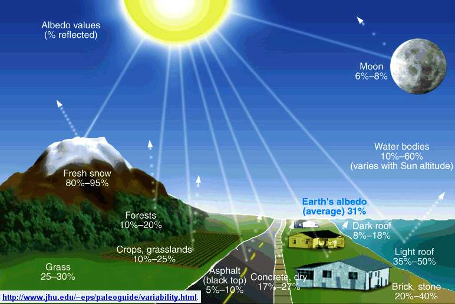

2 Les îlots de chaleur, un phénomène urbain
Un îlot de chaleur urbain désigne une élévation localisée des températures de l’air en milieu urbain significativement plus élevées que les températures péri-urbaines. Il se caractérise par une diminution de l’amplitude thermique entre le jour et la nuit. L’amplitude thermique est l’écart entre la température minimale et maximale en un même lieu pendant une durée de temps déterminée.
La question des îlots de chaleur a commencé réellement à intéresser la communauté scientifique à partir des années 1940. L’adoption des principes de climatologie urbaine s’est faite à partir des années 1940. Les raisons étaient pratiques car les municipalités rencontrent divers problèmes qui affectent directement la vie des habitants. En 1938 par exemple à Stuttgart en Allemagne rencontre des problèmes de pollution de l’air en raison notamment d’une localisation en fond de vallée encaissée limitant les circulations d’air et la vitesse des vents. La municipalité engage donc un météorologue qui est chargé d’étudier les impacts du plan d’urbanisme adopté par la ville trois années plutôt. Son travail conduit à l’identification de couloirs canalisant l’air froid et donc susceptibles de venir rafraîchir et renouveler l’air pollué présent sur l’agglomération, ce travail reçoit une attention toute particulière dans le plan d’urbanisme général adopté pour la ville en 1948. Cette histoire a le mérite de nous montrer que les problèmes climatiques sont souvent localisés dans une zone circonscrite et que les solutions ne peuvent émaner que des autorités publiques proches du problème constaté.
L’îlot de chaleur urbain est un phénomène physique et climatique d’origine naturelle et anthropique. Il est étroitement lié à la modification environnementale générée par l’accroissement urbain. Il dépend du climat local et des perturbations liées à l’activité humaine. Pour saisir plus en détail ce qu’est un îlot de chaleur nous allons étudier les causes, les caractéristiques et les conséquences notamment sur la santé.
2.1 Les causes
Le phénomène d’îlot de chaleur urbain est à l’échelle urbaine aussi important dans le changement climatique que l’effet de serre. Pour rappel, l’effet de serre est un phénomène naturel par lequel une partie de l’énergie solaire émise par la terre est absorbée et retenue sous forme de chaleur dans la basse atmosphère. L’effet de serre est causé par des gaz contenus dans l’atmosphère, principalement la vapeur d’eau. D’autres gaz jouent un rôle dans l’effet de serre : le dioxyde de carbone, le méthane, les oxydes d’azote, l’ozone et les hydrocarbures. L’effet d’îlot de chaleur est engendré par la ville, sa morphologie, ses matériaux et ses conditions naturelles, climatiques et météorologiques et ses activités. L’îlot de chaleur urbain influence le climat de la ville et agit sur le confort des citadins.
2.1.1 Caractéristiques des matériaux
Un îlot de chaleur est principalement causé par la rétention de la chaleur produite par le soleil. Le soleil est une source naturelle d’énergie de la terre. Il participe à son réchauffement naturel grâce aux ondes qu’il émet. Les rayons du soleil sont réceptionnés par les matériaux. En ville on assiste à des transferts de chaleur car l’énergie reçue du soleil et de l’atmosphère est absorbée et réfléchie en partie par les matériaux de la ville. En ville, il existe une multitude de surfaces qui absorbent l’énergie. Les caractéristiques des matériaux nous permettent de rendre compte de la chaleur en ville.
2.1.1.1 L’inertie thermique
L’inertie thermique représente la capacité d’un matériau à accumuler puis à restituer un flux thermique. Cette capacité dépend des paramètres propres à chaque matériau : capacité de conductivité, la capacité thermique massive qui est la capacité de réchauffement du matériau et la densité. L’inertie thermique comprend deux phénomènes physiques. La diffusivité et l’effusivité. Physiquement, la diffusivité thermique détermine la vitesse avec laquelle la température d’un matériau va évoluer en fonction des sollicitations thermiques extérieures. L’effusivité d’un matériau est sa capacité à échanger de l’énergie thermique avec son environnement. En général, plus un matériau est lourd et épais, plus il est inerte : il prend beaucoup de temps à accumuler de la chaleur et autant pour se refroidir.
2.1.1.2 L’albédo
L’albédo représente l’énergie solaire réfléchie par rapport à l’énergie solaire reçue (énergie réfléchie / énergie reçue). Il s’exprime en fraction de 0 à 1. Un matériau à faible albédo absorbe plus d’énergie et donc plus de chaleur, sa température de surface sera alors plus élevée.  L’albédo moyen du globe terrestre est de 0,28 (0,26 pour les océans). Or en ville on mesure des albédos très variés : 0,07 pour l’asphalte et le goudron, 0,20 pour le goudron brut et 0,4 pour les tuiles.
2.2 L’activité humaine, autre source de chaleur
Les activités humaines comme le transport, l’industrie ou la climatisation produisent une chaleur indirecte qui s’ajoute à la chaleur naturelle. Les activités humaines rejettent dans l’atmosphère des gaz à effet de serre. Ce qui a pour conséquence d’augmenter la capacité de la terre à absorber le rayon infrarouge du soleil et donc sa température. Au même titre que la chaleur naturelle émise par le soleil, les matériaux utilisés dans la construction des villes absorbent et conservent la chaleur produite par l’activité humaine.